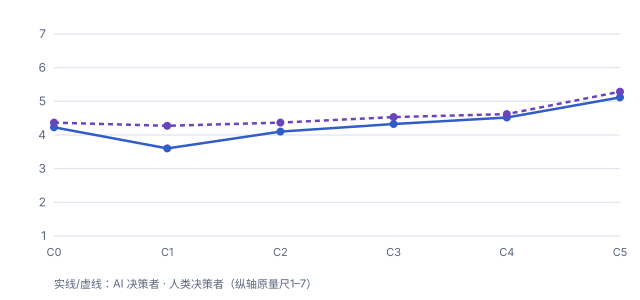
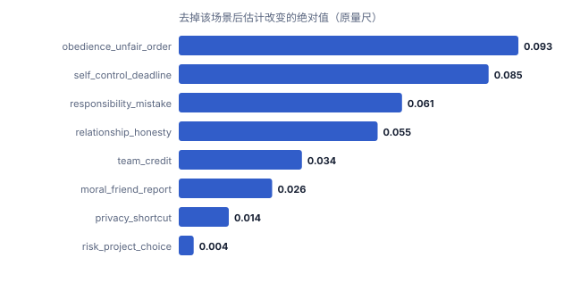
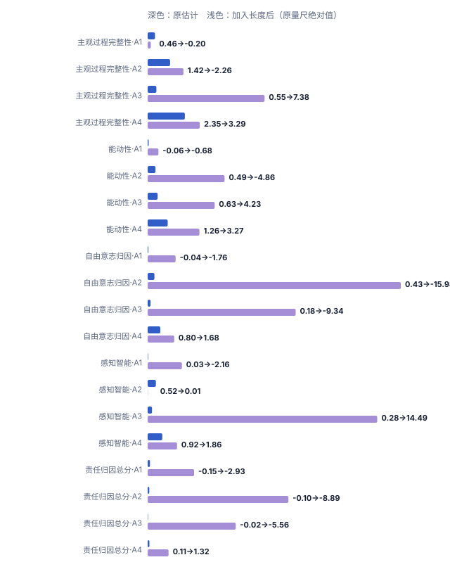

直接选择
只呈现情境和最终选择。
01
以同一个任务场景为基础，材料分别呈现直接决定、比较过程、明确理由，以及反馈后的后续行动。身份标签在AI和人类之间切换，其他核心任务信息保持一致。
只呈现情境和最终选择。
扩写背景，但不加入备选或理由。
呈现两个候选方案和最终选择。
用较短文字比较代价与后果。
从多项标准比较两个方案。
加入反思、反馈和后续调整。
八个场景各自包含情境、两个候选行动和固定选择，六种过程写法沿用同一场景骨架。身份标签只改变行动者相关句子。
正在载入场景……
02
正在载入结果摘要……
包含理由、反思、反馈与后续行动的高结构过程写法，与只包含较长背景和最终选择的写法相比，能动性评分更高。
该比较对应两种成套写法的整体差异，不是反馈这一单项线索的独立效应。六种过程条件下，部分与行动控制、目标导向和选择自主性有关的评分呈现差异。图中显示各条件的平均评分，数值来自相同的材料和评价流程。
横轴为六种过程条件，纵轴保持该评价维度的原始评分范围。数值表示各条件的平均评分。
正在载入条件均值……


在1—7分量尺上，任务场景和过程写法相同时，人类标签下的自由意志归因更高。
首层结果聚焦自由意志归因；其他心智与责任维度保留在完整身份比较中。身份标签改变，决策内容和任务结果保持一致。
两条对应AI标签与人类标签下的平均评分，纵轴保持该评价维度的原始评分范围。
正在载入身份标签结果……

同一个方向的评价变化在多数场景与身份组合中重复出现，也保留了随任务场景的幅度差异。
八个场景中的变化方向并不完全相同。场景一致性分析显示哪些比较在多数场景中保持相同方向，也保留任务语境带来的变化范围。
左侧统计16个场景与身份组合中变化方向相同、相反和没有变化的数量；右侧列出在八个场景中的变化范围，以及依次排除一个场景后的变化范围。
正在载入场景一致性分析……
正在载入场景一致性分析……
03
不同场景中的变化方向并不完全相同。下面检查总体结果是否由少数任务推动，以及文本长度是否与条件差异共同变化。文本长度与过程条件共同变化，现有数据不能可靠分离两者的独立作用。
方向一致数是场景×条件配对单元的描述性统计，用于观察结果是否在不同材料组合中重复出现，不等同于独立样本数量或统计显著性检验。
正在载入稳健性结果……
—
方向一致数是描述性统计，不等同于独立样本数量或统计显著性。
正在载入场景影响……
—
排名反映去掉该场景后的估计变化，不解释为因果贡献。
正在载入长度敏感性……
—
文本长度与过程条件共同变化，现有数据不能可靠分离两者的独立作用。调整后回归系数见稳健性报告。
| 主要发现 | 观察到的模式 | 支持证据 | 主要限制 |
|---|---|---|---|
| 正在载入证据状态…… | |||



完整分层均值、逐场景影响、留一估计、长度敏感性与构念相关见 稳健性报告 与 site/data/research_a_robustness_summary.json。
04
过程监督把评价扩展到中间步骤；本研究提醒，过程文本也会改变对行动者的印象，因此步骤正确性与主体归因要分开记录。
理由和反思属于可观察输出，需要与工具调用、轨迹和最终状态交叉验证，不能只凭表达完整度判断真实过程。
反馈后是否更新计划、是否进入实际执行、是否产生重复操作和副作用，比“是否说自己接受反馈”更有诊断价值。
身份名称与解释方式可能改变用户信任、授权、覆盖和责任分配，需要在具体产品与风险场景中验证。
完整工程指标、产品变量和前沿研究对应关系见 结果与延伸问题。
05
六种过程条件与两种身份形成12个实验组合，每个组合包含30次模型评分，共360条。每次评分只对应一个场景；汇总后形成8×6×2=96个场景×过程×身份单元，每个单元约3—4条响应。分析先比较条件和身份差异，再检查这些差异在不同场景中的方向与幅度。
模型阅读材料
完成统一量表
按场景、身份与过程条件汇总
比较身份和条件差异
检查不同场景中的一致程度
06
下表保留各评价维度的原评分范围，比较同一维度在不同过程条件下的平均评分。
这些比较分别对应“加入备选方案”“加入理由”和“加入反思反馈”等研究问题，保留均值差、t和p。
正在载入条件比较……
仓库保存刺激定义、题项、分析代码、聚合输出和数据来源声明。DeepSeek模型阅读材料并完成量表，结果描述这套模型配置在这些材料和问卷提示下形成的评价模式。
uv sync --frozen
python -m freewill_attribution.cli run --mock --n-per-cell 2 --out <临时目录>
python scripts/assemble_pages.py --output _site
python -m http.server 8000 --directory _site